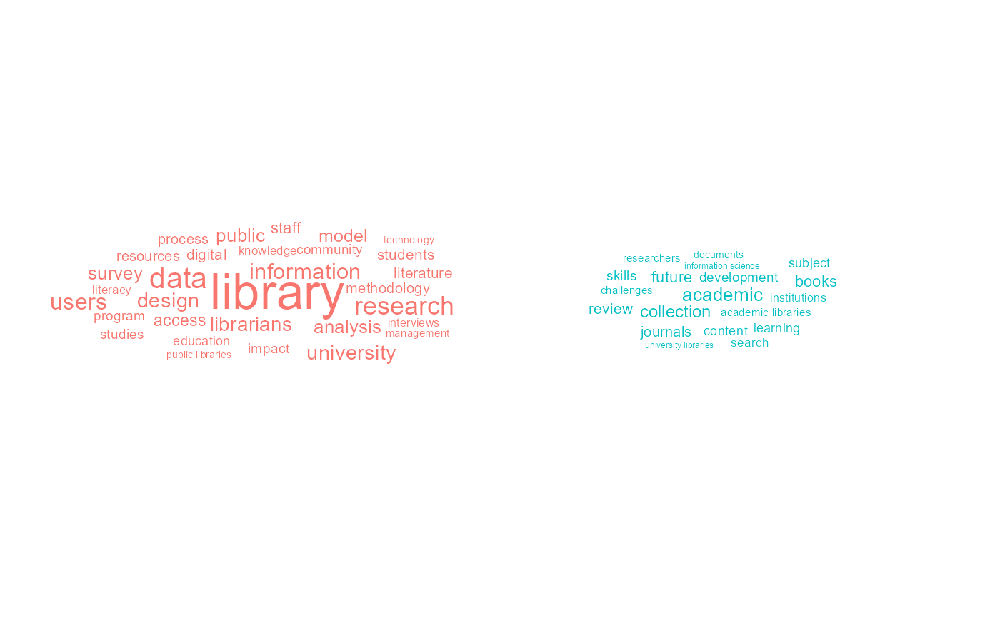
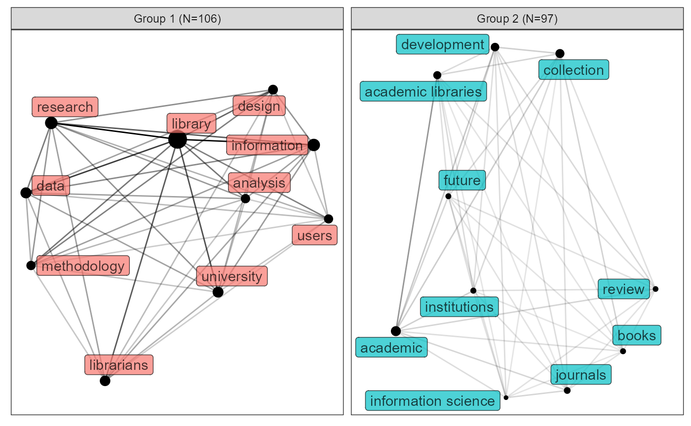

vignettes/tutorial_raw_text.Rmd
tutorial_raw_text.RmdThis tutorial gives an example of how to use akc package to carry out automatic knowledge classification based on raw text. First, load the packages we need.
library(akc)
library(dplyr)
#>
#> Attaching package: 'dplyr'
#> The following objects are masked from 'package:stats':
#>
#> filter, lag
#> The following objects are masked from 'package:base':
#>
#> intersect, setdiff, setequal, unionIn the dataset, we have the ID, title, keyword and abstract of documents. We are going to use the keyword as the dictionary to extract keywords from the abstract.
bibli_data_table
#> # A tibble: 1,448 x 4
#> id title keyword abstract
#> <int> <chr> <chr> <chr>
#> 1 1 Keeping the doors ope~ Austerity; community c~ "English public librari~
#> 2 2 Comparison of Sloveni~ Comparative librarians~ "This paper aims to pro~
#> 3 3 Analysis of the facto~ Continuation will of v~ "This study aims to dev~
#> 4 4 Redefining Library an~ Curriculum; education ~ "The purpose of this st~
#> 5 5 Can in-house use data~ Check-out use; circula~ "Libraries worldwide ar~
#> 6 6 Practices of communit~ Community councillors;~ "The purpose of the res~
#> 7 7 Exploring Becoming, D~ Library and Informatio~ "Professional identity ~
#> 8 8 Predictors of burnout~ Emotional exhaustion; ~ "Work stress and profes~
#> 9 9 The Roma and document~ Academic libraries; co~ "This paper explores th~
#> 10 10 Mediation effect of k~ Job performance; knowl~ "This paper proposes a ~
#> # ... with 1,438 more rowskeyword_clean is designed to split the keywords and removed pure numbers and contents in the parentheses. All letters would be converted to lower case. Details see the help of keyword_clean, use “?keyword_clean”. After cleaning, we’ll use these keywords to establish a dictionary.
Using keyword_extract to extract keywords from the abstract. Here, we also exclude the stop words using the “stopword” parameter.
While this process has consider lots of factors, such as stemming, lemmatizing, etc. Here I’ll provide a easy implementation. For advanced usage, use “?keyword_merge” to find out.
This process will construct a keyword co-occurrence network and use community detection to group the keywords automatically. You can use “top” or “min_freq” to control how many keywords should be included in the network. “top” means how many keywords with largest frequency should be included. “min_freq” means the included keywords should emerge at least how many times. Default uses top = 200 and min_freq = 1.
Getting the result as a table could be easy by:
grouped_keywords %>%
as_tibble()
#> # A tibble: 203 x 3
#> name freq group
#> <chr> <int> <int>
#> 1 academic 351 2
#> 2 academic librarians 42 2
#> 3 academic libraries 229 2
#> 4 access 201 1
#> 5 accessibility 25 1
#> 6 acquisition 43 2
#> 7 activities 110 1
#> 8 analysis 301 1
#> 9 archives 34 2
#> 10 aspects 67 1
#> # ... with 193 more rowsIf you only wants the top keywords to be displayed, keyword_table provides another relatively formal table:
grouped_keywords %>%
keyword_table()
#> # A tibble: 2 x 2
#> Group `Keywords(TOP 10)`
#> <int> <chr>
#> 1 1 library (1583); research (589); information (583); data (437); universi~
#> 2 2 academic (351); collection (283); development (254); academic libraries~In such implementation, only two groups are found. You can specify the number of top keywords using “top” parameter.
Currently, keyword_vis,keyword_network and keyword_cloud could all be used to draw plots for the network, but in differnt forms. Let’s try to draw a word cloud first:

If you want to draw a network, use keyword_network:
In the plot, “N=106” means altogether there are 106 keywords in the group, though only the top 10 by frequency are showed in the graph. If you only want to visualize the second group and display 20 nodes, try:

Have fun playing with akc!